@@GRID_ENGINE_NAME@@ - Accounting and Reporting Console
The Accounting and Reporting Console is a powerful tool to
visualize statistical values of the @@GRID_ENGINE_NAME@@.
After a successful login, select the @@GRID_ENGINE_NAME@@ ARCo
application. You are redirected to the Overview page that shows you
a list of the predefined ARCo queries.
Overview Page
In the Overview page, you have access to all Queries and Results
which are defined in ARCo. You can change the view by clicking the
corresponding Query List or Result List tab.
Query List
In the Overview page, a table with the predefined queries is
shown. The following columns are available:
|
Column
|
Description
|
|
Name
|
User defined name of the query
|
|
Category
|
For each query a category can be specified.
This
is useful for sorting and filtering.
|
|
Last Modified
|
Timestamp of the last modification of the query
|
|
Query Type
|
Type of the query (simple or advanced query)
|
Available Actions
The buttons at the top and bottom of the table show the possible actions for
the selected query. The buttons are only activated, if the action is
possible. To select a query click the radio button in the first
column of the query row.
|
Action
|
Description
|
|

|
Executes the selected query. The Run Action is the default
action. If you click on the name
of the query it is also
executed.
|
|
|
Edit the selected query
(requires write privileges)
|
|
|
Delete the selected query
(requires write privileges)
|
|
|
Define a new simple query
|
|
|
Define a new advanced query
|
|
|
Define advanced sort for the Query List
|
Note: If the action buttons for edit
and delete are not active when a query is selected please ask your
administrator for the write privileges to the ARCo console.
Result List
The Result List shows a table with all available saved Results. The columns are equal to the
columns of the Query List.
Available Actions
|
Action
|
Description
|
|
|
View the selected Result
|
|
|
Delete the selected Result
(requires write privileges)
|
|
|
Define an advanced sort for the Result List
|
Save Query as Result
Queries can be saved as Results, by clicking the Save Result button on the Query Result
page.
This will create a snapshot of the displayed Query Result. Subsequent changes to the
database have no effect on the saved Result. Results are always saved to the defined spool directory
(default: /var/spool/arco/results).
Exporting Query or Result
Each Query or Result can be exported in a CSV or PDF format. Select the appropriate format in the Export As drop down menu,
and specify a directory where to save the file, if prompted.
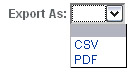
Creating and Running Simple Queries
Simple query allows the creation of a simple query based on a single view or a table,
without the knowledge of SQL.
The resulting SQL query string will be constructed by the system.
How
to Create a Simple Query
Steps
The following screen appears
after clicking the New Simple button in the Overview page.
In the Common tab you define the optional information for the query. In the Simple Query tab
you create the query. In the View tab you
define the visual representation of the query (tabular data, graph, pivot table).
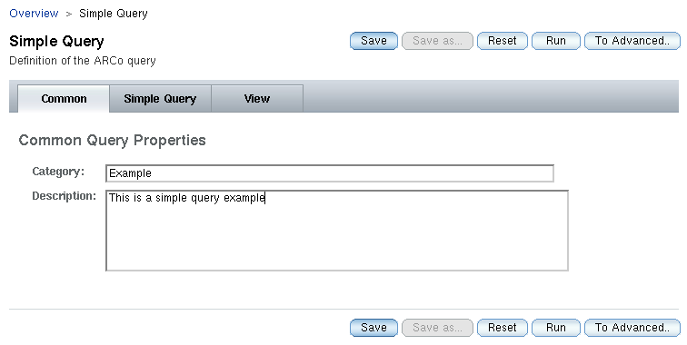
Clicking the Simple Query tab displays the Query definition
page. The page is divided into:
Table/View drop down menu for selecting the database object
on which the query will be based.
Field List for adding the fields that should be displayed by the query.
Filter List for defining filter conditions of the query
Row Limit textbox to restrict the number of rows displayed by the query
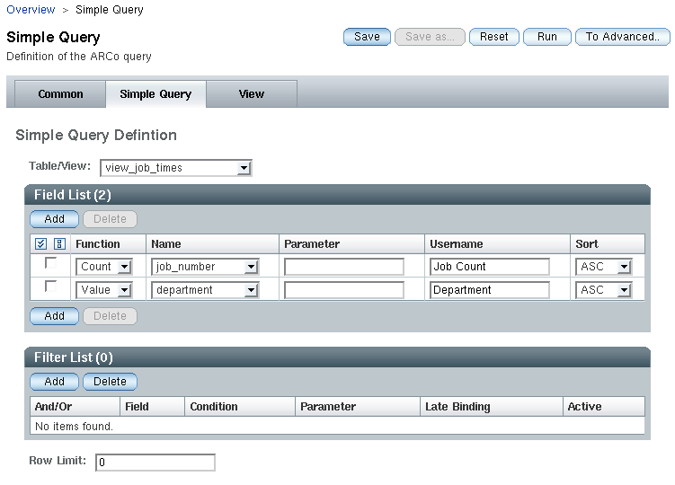
The single steps how to construct a simple query are outlined as
follows:
Select a table or a view from the Table/View drop down menu.
Add the fields you want to display
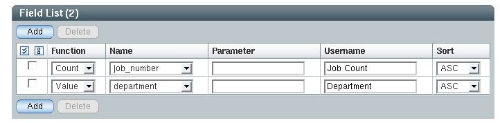
The Function allows you to apply either an aggregate function or a numeric operator
to the specified field. The numeric operators can only be applied to the numeric fields and must
have the Parameter specified.
VALUE - Returns the current value of a field (not an aggregate function)
SUM - Returns the total sum of a column
COUNT - Returns the number of rows (without a NULL value) of a column
MIN - Returns the lowest value of a column
MAX - Returns the highest value of a column
AVG - Returns the average value of a column
The Name is a name of a column in the selected table/view.
The Parameter is applied when numeric operator is selected in the Function
The Username is the column heading that will be displayed in the query result
The Sort allows to define the sorting order for every column, if needed.
(Optional) Define Filters.
You must specify at least one field before you can define
filters.
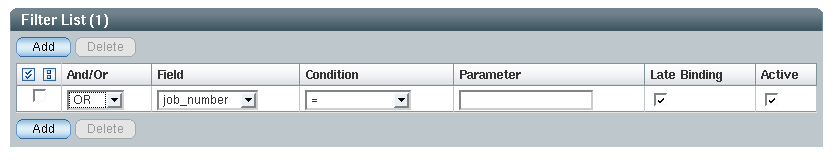
AND/OR is needed for any filter except the first. This is
the logical connection to the previous filter condition.
The Field is the name of the field to be filtered. If a
field has a user-defined name (Username), it is also shown in the selection list.
The Condition field specifies the operators that are used to
filter the values from the database.
The Parameter field contains a value that is used for filtering
the values returned by the query.
The Late Binding specifies that the Parameter condition will appear when the Query is run,
and can be easily changed during runtime. It acts as a placeholder.
The Active disables or enables the filter
Supported Operators
|
Filter
|
Symbol
|
Description
|
Number of Parameters
|
Parameter Usage
|
|
Equal
|
=
|
Filters the fields that equal the Parameter
|
1
|
|
|
Not Equal
|
<>, !=
|
Filters the fields that do not equal the Parameter
|
1
|
|
|
Less Than
|
<
|
Filters the fields that are less than the Parameter
|
1
|
|
|
Less
Than or Equal
|
<=, ≤
|
Filters the fields that are less than or equal the Parameter
|
1
|
|
|
Greater
Than
|
>
|
Filters the fields that are greater than the Parameter
|
1
|
|
|
Greater
Than or Equal
|
>=, ≥
|
Filters the fields that are greater than or equal the Parameter
|
1
|
|
|
Null
|
|
Filters the fields that are null
|
0
|
|
|
Not Null
|
|
Filters the fields that are not null
|
0
|
|
|
Between
|
|
Filters the fields within the interval specified in the Parameter.
|
2
|
1 AND 100
|
|
In
|
|
Filters the fields that are equal to the values specified in the Parameter
|
1 or more
|
dep-234, dep-bio, dep-phy
|
|
Like
|
|
Filters the fields that match the specified pattern
|
1
|
% allows to match any string on any length (including zero lenght)
%bob% will return the only the fields containing the string bob
_ allows to match on a sigle character
|
(Optional) Limit the number of returned rows. Enter the number of rows you want to return into the Row Limit textbox. Even if the result set
contains more rows, only the first n rows will be displayed.
Click Save to save the query.
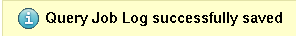
The following figure displays the Save As screen. Enter your preferred query name into the textbox, and then click OK.

After saving the query, the Simple Query screen will be redisplayed with the new query name.
How
to Edit a Simple Query
Steps
Select a query from the Query List tab on the Overview page
Click Edit.
The Simple Query screen displays.
Make changes in the Simple Query screen, by navigating through
the tabs and entering your changes, as you would for creating a
Simple Query .
Save and/or run your changed query.
How
to Run a Simple Query
Step
You can either run a previously saved query, or a query you have just created.
To run a query you have just created, click Run on the
Simple Query screen.
To run a previously saved query, select the query
from the Query List tab on the Overview page, and click Run, or simply click the query name hyperlink.
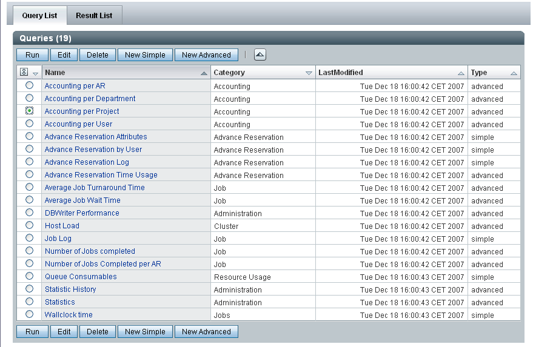
Creating and Running Advanced Queries
You must have previous experience writing SQL queries to use this
feature.
How
to Create an Advanced Query
Steps
Click New Advanced Query in the Query List tab on the Overview pag
Select the SQL tab
Define your SQL query in the textbox
To configure a View, refer to the View Configuratiuon section
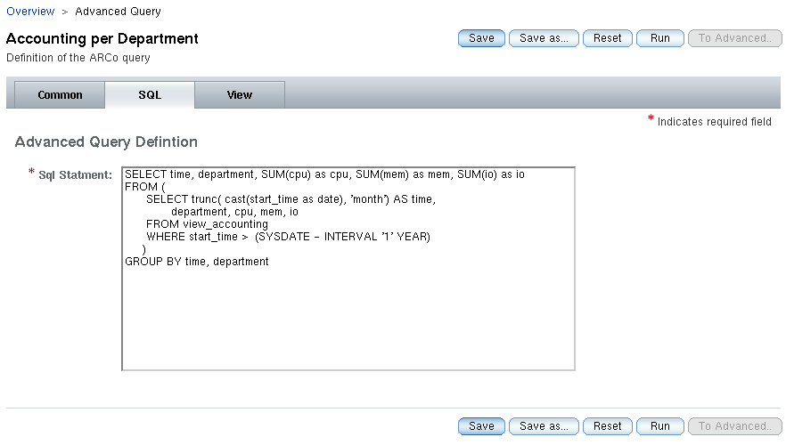
Save and/or run your query.
To save your query, click Save.
To run your query, click Run.
How
to Edit an Advanced Query
Steps
Select a query from the Query List tab on the Overview page
Click Edit.
The Advanced Query screen displays.
Make changes in the Advanced Query screen, by navigating through
the tabs and entering your changes, as you would for creating an
Advanced Query .
Save and/or run your changed query.
How
to Run an Advanced Query
Step
You can either run a previously saved query, or a query you have just created.
To run a query you have just created, click Run on the
Advanced Query screen.
To run a previously saved query, select the query
from the Query List tab on the Overview page, and click Run, or simply click the query name hyperlink.
Latebindings for Advanced Queries
The syntax for the latebindings in advanced queries is:
LATEBINDING{ <column>;<operator>;<default value> }
<column> name if the latebinding
<operator> a SQL operator (e.g. = < > in .. )
<value> default value (e.g. 'localhost' )
Example 5–7 Latebindings Examples
select hostname from sge_host where LATEBINDING{hostname, like, 'a%'}
select hostname from sge_host where LATEBINDING{hostname, in, ('localhost', 'foo.bar')}
How
to Create a View Configuration
Steps
To change the view configuration for a query choose the View
tab.
To create a view for a saved query:
The current view configuration is displayed.
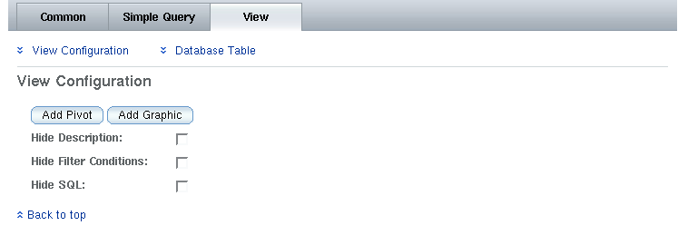
The View is divided into four sections: Database Table, Pivot
Table, Graphic Presentation, and View Configuration, which is always visible.
If the query contains already defined View elements, links allowing you to
jump to the corresponding section will be displayed.
In the View Configuration section, you can toggle the visibility of Query Description
(entered in the Common Tab), the Filter Conditions (Parameters specified for the Filter),
and the SQL statement (assembled by the Simple Query, or entered in the SQL tab in the Advanced Query)
Pressing Add Database, Add Pivot, Add Graphic adds the
corresponding section.
For some queries, only a subset of the possible View selections
is meaningful. For example, if you have only two columns to select
from, pivot makes no sense.
In the Database Table section, add
columns that you wish to display under Name, and adjust
their Type and Format. The order in which the columns are added will
be the order in which the columns are presented. The configuration in this section does
not affect any underlying filters.
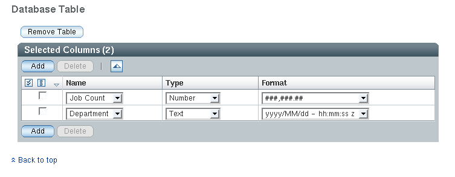
For the Pivot Table, add the pivot column, row, and data entries,
then choose the column Name, Type, and Format. After adding an entry to the Pivot Table, you can change it's type
using the Pivot Type drop down menu.
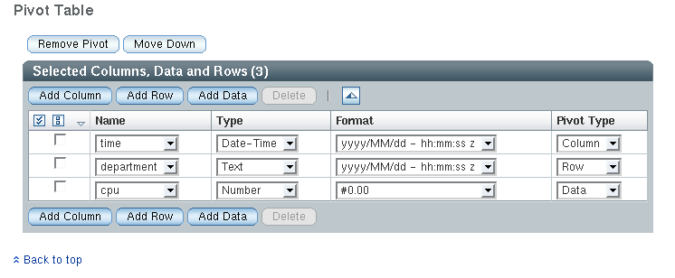
For the Graphic section, you can attach the query data to
different chart diagram types. The following chart types are
available from the Diagram Type drop down:
Bar Chart
Bar Chart (3D)
Bar Chart Stacked
Bar Chart Stacked(3d)
Pie Chart, Pie Chart 3D
Line Chart
Line Chart Stacked Line
Bar and Pie types can be display with a 3D effect. Bar and Line
diagrams can be drawn as stacked diagrams (values on the y-axis
summarized).
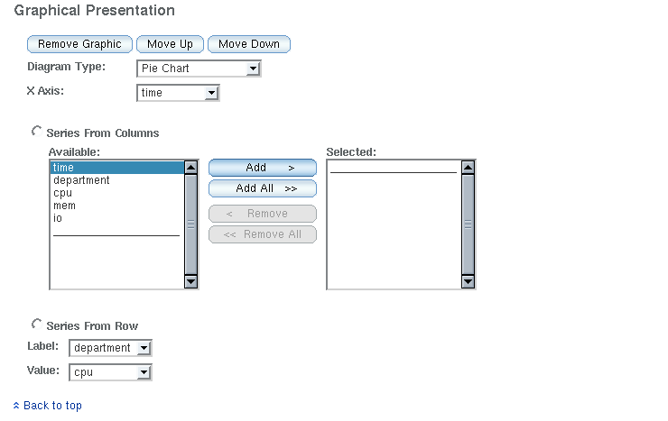
Click Save or Save As to save your View configuration to the
query.
Click Run to run your query.
How
to Define Series for Diagrams
There are two ways to define the data series for a diagram.
Steps
Series from columns: All column values are added to a series.
The name of the series is the column header
Series from rows: All column values define the series. The
names of the series is defined by the values of the label column.
The values of the series are defined by the value column.
Example 5–1 The query “Accounting per Department”
results in a table with the columns: time, department, and cpu.
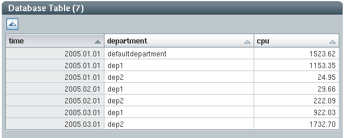
Example 5–2 Displaying the Results - Selecting Configuration
To display the result in a pie chart, select the following
configuration:

Example 5–3 Displaying the Results - Pie Charts
The result will be a multiple pie chart
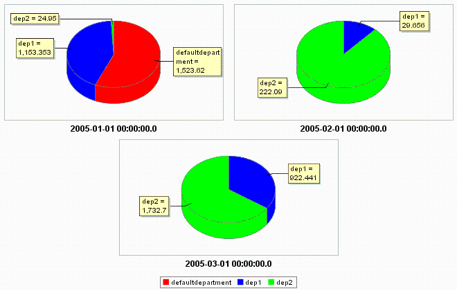
Example 5–4 Cpu, Io, and Mem Usage Over All Departments
A query summarizes cpu, io, and mem usage over all departments:
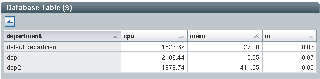
Example 5–5 Displaying the Results - Selecting
Configuration
To display the results in a bar chart, select the following
configuration
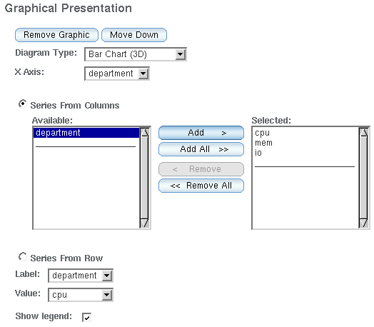
Example 5–6 Displaying the Results - Bar Chart
The result will be a bar chart with three bars for each
department:
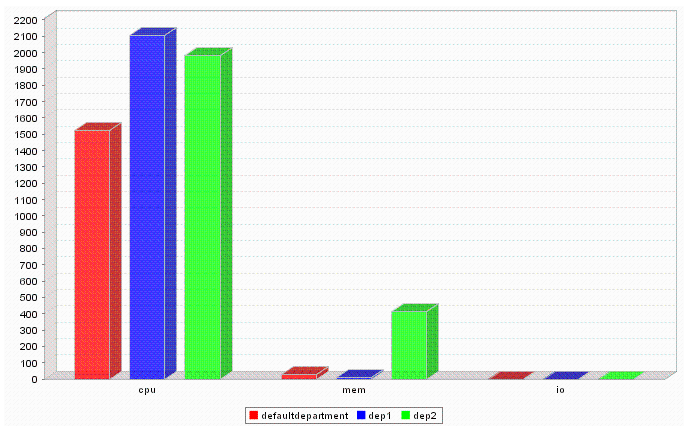